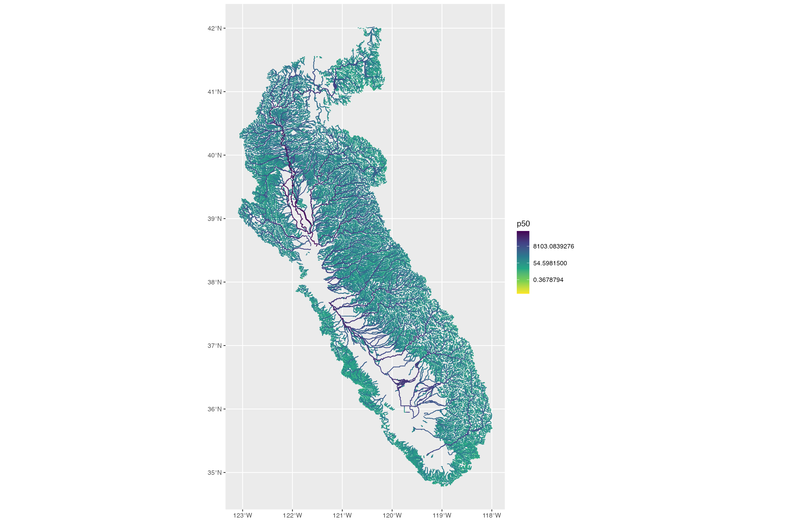
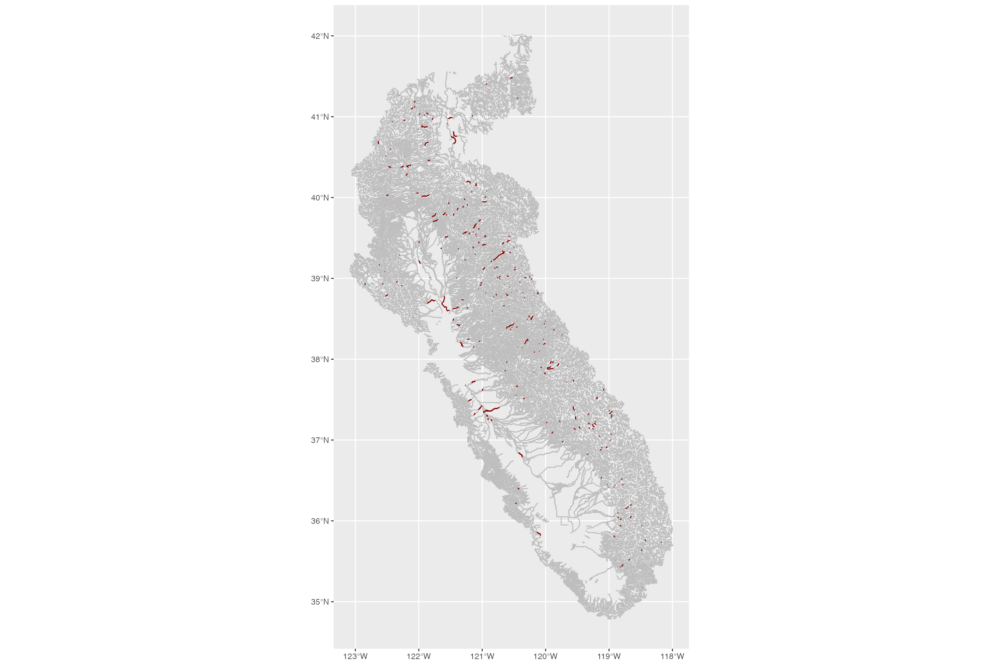

Natural Flows Overview Document
natural_flows_template.RmdNatural Flows Summary
Natural Flows uses a machine learning model to estimate monthly unimpaired flows for all stream segments in California, as well as functional flow metrics including baseflow, pulse flow, and recession flow magnitudes, durations, and timing.
- Source: The Nature Conservancy & Code for Nature, based on UC Davis California Environmental Flows Framework research and USGS modeling frameworks.
- Accessibility: Outputs are public, open and accessible online at rivers.codefornature.org. The machine learning model for estimating monthly unimpaired flows is not publicly accessible. However, the model used to calculate functional flow metrics is published as func-flow under the UC Davis Environmental Flows Project.
- Temporal Coverage: The temporal range of model results is 1950 - 2023.
-
Spatial Coverage: Model results are available for
all NHDPlusV2 flowlines (
comids) in the Central Valley and the rest of California. The reliability of results varies based on the spatial and temporal distribution of USGS streamgages which were used to train the model.
- Maintenance: Maintained by the Natural Flows research team with regular updates.
- Contact: Julie Zimmerman (Nature Conservancy); Daren Carlisle (USGS); Ted Grantham (UC Berkeley)
- Utilized By: TBC
Detailed in the technical report
Natural Flows Model Summary
There are two types of model output.
- Monthly Dataset (California Unimpaired Flows Database)1: The core output of the Natural Flows project. A random forest model was used to predict unimpaired flows at a monthly timestep for all stream segments in California. Based on peer reviewed research from Zimmerman et al.2.
- Functional Flow Metrics 3: Estimation of the functional flows metrics, as defined by the California Environmental Flows Framework, for modeled unimpaired flows. Based on peer reviewed research from Grantham et al.4
Monthly Dataset (California Unimpaired Flows Database)
The monthly dataset provides unimpaired flow estimates at a monthly timestep for all stream segments in California.
Note regarding alternatives: The Department of Water
Resources (DWR) released its own model of unimpaired flows for the
Central Valley. This product is described in the technical report,
Estimates
of Natural and Unimpaired Flows for the Central Valley of California: WY
1922-2014. Unimpaired flows data can be retrieved via the CDEC
system via sensor code 8 (FNF, FULL NATURAL FLOW, CFS).
Refer to CDEC documentation for details.
Functional Flow Metrics
The model divides the water year into the dry season (low base flows), wet season (higher base flows beginning with a fall pulse flow and punctuated by various peak flows), and spring recession period (the transition back from high to low flows). As described by The Nature Conservancy:
Using a similar modeling approach [to the monthly dataset], functional flow metrics were predicted for every stream segment in the state (Grantham et al. 2022). One key difference between the approaches is that monthly flows were predicted for each month over the time period of 1950-2015, whereas the functional flow metric models generate long-term predictions (across the entire time period of 1950-2015) of functional flows metric values for each stream segment. The expected natural range of functional flows are reported for all years, and for subsets of years classified as “wet”, “moderate” and “dry” water years.
Five categories of functional flow metrics are reported, based on the five flow components described by Yarnell et al, 20155 and implemented in the eFlows Functional Flow Calculator6. As described in the Natural Flows application:
dry-season base flow. Dry-season base flows support native species during the dry-season period when water quality and quantity limit habitat suitability.
fall pulse flow. The first major storm event following the dry season. These flows represent the transition from dry to wet season and serve important functions, such as moving nutrients downstream, improving water stream flow water quality, and signaling species to migrate or spawn.
wet-season base flow. Wet-season base flows support native species that migrate through and over-winter in streams.
peak flow. Peak flow events transport a significant portion of sediment load, inundate floodplains, and maintain and restructure river corridors.
spring recession flow. Spring recession flows represent the transition from high to low flows, provide reproductive and migratory cues, and redistribute sediment.

Architecture
The predictive model architecture is summarized by The Nature Conservancy as follows:
Predicted Monthly Flows: We partnered with the U.S. Geological Survey (USGS) to develop a modeling approach that uses machine learning to predict monthly flows statewide. We identified 250 reference stream gages with little or no flow alteration across the state and split them into three regions based on climate and hydrologic conditions: Interior Mountains (including the Sierra Nevada and Klamath mountains), North Coastal Mountains (including the mountains in the north western portion of the state), and Xeric (including the Central Valley, Central and South Coast, and desert portions of the state). Using the observed monthly flows at the reference gages, we developed statistical models for each region that accurately predicted streamflow at these reference gages using fixed physical watershed characteristics (such as geology, soils, and elevation) and monthly climate data (such as precipitation, air temperature, and runoff volume). The models for each region were then used to predict flows at all streams in that region, using the NHDPlus Version 2 (Horizon Systems, 2018) to delineate stream reaches based on a common identifier (COMID). For each stream reach, we report the expected monthly mean, median, maximum, and minimum natural flow values for all months from 1950 to 2015. For each of these metrics, we also provide the average flow value predicted by the model (“estimated”) and the range of uncertainty, expressed as the 10th and 90th percentile of predicted values (“P10” and “P90”). For a full description of the datasets and methods used to generate the natural flow data, see Zimmerman et al, 2017.
Predicted Functional Flows: Using a similar modeling approach, functional flow metrics were predicted for every stream segment in the state (Grantham et al. 2022). One key difference between the approaches is that monthly flows were predicted for each month over the time period of 1950-2015, whereas the functional flow metric models generate long-term predictions (across the entire time period of 1950-2015) of functional flows metric values for each stream segment. The expected natural range of functional flows are reported for all years, and for subsets of years classified as “wet”, “moderate” and “dry” water years. For this exercise, a set of 219 reference gages was used to train the models. We modeled metrics associated with five functional flow components including the fall pulse flow, wet-season baseflow, peak flow, spring recession flow, and dry-season base flow (Yarnell et al. 2020). Functional flow metrics that describe each of these functional flow components are described in the tables below. For each FFM, predictions are provided as a range (10th, 50th, and 90th percentile values), which reflects both model uncertainty and interannual variation. In Section A of CEFF, these predicted metrics are used to identify ecological flow criteria to protect native aquatic species and communities. For a full description of the datasets and methods used to predict functional flow metrics, see Appendix D of the CEFF Guidance Document and Grantham et al, 2022.
Accessibility
The methods and assumptions used in the predictive models are well documented in the associated peer-reviewed papers.
For the Monthly Flows prediction, the Zimmerman et al. (2017) paper contains the following supporting information:
- Table S1. Description of physical basin attributes considered as potential predictors in statistical models of baseline monthly flows in California streams.
- Table S2. Performance statistics of models predicting natural maximum, mean, and minimum monthly flows in California regions.
- Data S1. Predictor variable importance measures from random forest
models described in Zimmerman et al. 2017.
- Text S1. Online Data Repository and Visualization
Similarly, for the Functional Flows prediction, the Grantham et al. (2022) paper contains supplemental online materials including:
- Table S1. Reference gages for functional flow metric modeling
- Table S2. Predictor variables for functional flow metric
models
- Table S3. Variable importance rankings for functional flow metric models
- Table S4. Functional flow metric model performance statistics
- Table S5. Functional flow metric model performance statistics by stream class
Update procedure
Predicted monthly flows have been updated several times, as described in the Methods section. For example, on June 2022 an updated set of PRISM monthly climate data was incorporated, the stream network accumulation method was updated, and other computational methods were revised.
QA/QC procedures
Initial model QA/QC is documented in the associated peer-reviewed papers. Ongoing QA/QC procedures are not defined.
Data Inputs
Querying the dataset requires stream segments from the NHDPlusV2
dataset distributed by US
EPA. Stream segments are identified by unique COMID
identification numbers. For analyses that are using a hydrography
dataset other than NHDPlusV2 (for example, NHDPlus v1, NHDPlus
HR, CalHydro100K,
or California
Streams), use of spatial joins or crosswalk tables will be necessary
to retrieve the desired COMID identifiers.
Model Outputs
Model output data can be accessed in at least two ways:
-
API documented at https://rivers.codefornature.org/#/data
Monthly data: Query CSV via GET request at
https://flow-api.codefornature.org/v2/stream/?comids=...&...for a list of COMIDs or all COMIDs. Filter parameters for years, months, statistics, and variables are defined in the API documentation. POST requests are also possible via RESTful API.Functional Flow Metrics: Query CSV via GET request
https://flow-api.codefornature.org/v2/ffm/?comids=...&...for a list of COMIDs or all COMIDs. Filter parameters for metrics, water year types, modeling values, and gage data are defined in the API documentation. POST requests are also possible via RESTful API.
-
Direct download
- Monthly data: Not available for direct download
- Functional flow metrics: full ZIP download explored below
Monthly Dataset
Queries output a longform CSV of the following form.
-
comid(string): NHDPlusV2 common identifier -
statistic(string): statistics, e.g. max, mean, median, min -
variable(string): percentile of model runs -
year(integer): model year -
month(integer): model month -
value(number): modelled value
Functional Flow Metrics (FFM) Dataset
The data table is long form, with one row per flowline
(comid), per water year type (wyt), per
functional flow metric (ffm). The raw table takes the
following form, with descriptive text sourced from the Natural Flows
website.
-
comid(string): NHDPlusV2 common identifier -
ffm(string): functional flows metrics code (see …) -
wyt(string): water year type -
p10,p25,p50,p75,p90: modeling values for 10, 25, 50, 75 and 90 percentile of runs, use p50 for the most likely value -
unit: measurement unit for p10, p25, p50, p75, and p90 -
source: source of p10, p25, p50, p75, and p90
For reaches with streamgages, an additional set of rows and
functional flow metrics are included, reporting the metrics derived from
the observed gage data rather than the model result. For these rows
(source=="observed"), the following fields are also
populated.
-
gage_id: USGS gage id where observed -
observed_years: number of years of observations -
observed_year_start: first water year of observations -
observed_year_end: last water year of observations -
alteration: alteration compared to modelled value
The following attributes are included in the table, with values
reported as separate variables for the percentiles p10,
p25, p50, p75, p90.
Some attributes are recorded for the overall water year type
all while others are reported for each of dry,
moderate, wet.
Metrics are broken down into the following flow components, each reporting some sort of magnitude, timing, and duration information.
-
ds= dry-season base flow. Reported separately fordry,moderate,wetwater year types.-
ds_mag_50= dry-season baseflow = Calculated as 50th percentile of daily flow within dry season (cfs) -
ds_mag_90= dry-season high baseflow = Calculated as 90th percentile of daily flow within dry season (cfs) -
ds_tim= dry-season start = Start date of dry season (water year day) -
ds_dur= dry-season duration = Number of days from start of dry season to start of wet season (days)
-
-
fa= fall pulse flow. Reported separately fordry,moderate,wetwater year types.-
fa_mag= Peak magnitude of fall pulse event (maximum daily peak flow during event) (cfs) -
fa_tim= Date of fall pulse event peak (water year day) -
fa_dur= Duration of fall pulse event (days)
-
-
wet= wet-season base flow. Reported separately fordry,moderate,wetwater year types.-
wet_bfl_mag_10= Wet-season base flow, calculated as 10th percentile of daily flows within the wet season (cfs) -
wet_bfl_mag_50= Wet-season median flow, calculated as 50th percentile of daily flows within the wet season (cfs) -
wet_tim= Start date of wet season (water year day) -
wet_bfl_dur= Number of days from start of wet season to start of spring recession period (days)
-
-
peak= peak flow. Reported separately for2-year,5-year, and10-year recurrence intervals (#).-
peak_#= Peak flow magnitude for the specified recurrence interval (cfs) -
peak_dur_#= Cumulative number of days in which this peak flow magnitude is exceeded within a season (days) -
peak_freq_#= Number of times that this peak flow magnitude is exceeded within a season (number of occurrences)
-
-
sp= spring recession flow. Reported separately fordry,moderate,wetwater year types.-
sp_tim= Start date of spring season, defined as 4 days after last wet-season peak (water year day) -
sp_mag= Daily flow on start date of spring recession period. (cfs) -
sp_dur= Number of days from start of spring recession period to start of dry season (days) -
sp_roc= Recession rate, defined as median daily rate of change (%) over decreasing periods during the spring recession period
-
Spatial & Temporal Coverage
Plot and Chart that show coverage over watersheds, map here to show temporal coverage for a site # years or something Highlighting major limitations, full time periods missing across many watersheds
Spatial coverage of flowlines with model data (showing 10-year peak flow p50 value as an example)
st_zm(flowlines_sf) |>
inner_join(filter(naturalflows_tb, ffm=="peak_10" & source=="model")) |>
arrange(p50) |>
ggplot() + geom_sf(aes(color=p50)) + scale_color_viridis_c(trans="log", direction=-1)
Spatial coverage of observed (training) data:
st_zm(flowlines_sf) |>
inner_join(filter(naturalflows_tb, ffm=="peak_10" & source=="observed")) |>
ggplot() + geom_sf(data=st_zm(flowlines_sf), color="gray") + geom_sf(color="darkred")
Of the 86148 NHDPlusV2 segments in the Central Valley, 60716 have natural flows estimates, a total of 70%. Generally, the missing segments are secondary channels or very minor tributaries, along with canals and aqueducts and other non-stream flowlines.
Data use and limitations
| Use Case | Benefits | Limitations |
|---|---|---|
| Planning environmentally optimal dam release requirements / schedules based on natural hydrographs | Quickly accessible for any stream reach regardless of historical unimpaired flow data | May need refinement before applying for site-scale decision-making |
| Filling in gage data gaps: input to H&H models on ungaged streams | Well-suited for filling gage data gaps on unimpaired streams | Not usable for this purpose for impaired/dammed streams |
| Watershed-scale habitat modeling: characterizing streams and building typology | Functional flow metrics allow rapid understanding of stream hydrology at extensive spatial scale | |
| Geomorphic studies and flood modeling: Alternative source of peak flows (Q2,Q5,Q10) | Quickly accessible for any stream reach regardless of gage present; provides margins of error; likely a more reliable estimate than traditional regional regression | Represents unimpaired flow (although so does regional regression) so not applicable on impaired/dammed streams; does not include estimates above Q10; for gaged streams not as reliable as Bulletin 17C |
| … | … | … |
Zimmerman, J. K. H., Carlisle, D. M., May, J.T., Klausmeyer, K. R., Grantham, T. E., Brown, L. R. & Howard, J. K. (2023). California Unimpaired Flows Database v2.1.2, The Nature Conservancy. San Francisco CA. https://rivers.codefornature.org/↩︎
Zimmerman, J. K. H., Carlisle, D. M., May, J.T., Klausmeyer, K. R., Grantham, T. E., Brown, L. R. & Howard, J. K. (2017). Patterns and magnitude of flow alteration in California, USA. Freshwater Biology 63: 859-873. https://doi.org/10.1111/fwb.13058↩︎
California Environmental Flows Working Group (CEFWG). California Natural Flows Database: Functional flow metrics v1.2.1, May 2021. https://rivers.codefornature.org/↩︎
Grantham, T. E., Carlisle, D. M., Howard, J., Lane, B., Lusardi, R., Obester, A., Sandoval-Solis, S., Stanford, B., Stein, E. D., Taniguchi-Quan, K. T., Yarnell, S. M. & Zimmerman, J. K. H. (2022) Modeling Functional Flows in California’s Rivers. Frontiers in Environmental Science 10:787473. https://doi.org/10.3389/fenvs.2022.787473↩︎
Sarah M. Yarnell, Eric D. Stein, J. Angus Webb, Theodore Grantham, Rob A. Lusardi, Julie Zimmerman, Ryan A. Peek, Belize A. Lane, Jeanette Howard, Samuel Sandoval-Solis. A functional flows approach to selecting ecologically relevant flow metrics for environmental flow applications. River Research and Applications 36(2): 318-324. February 2020. https://doi.org/10.1002/rra.3575↩︎
Belize Lane, Noelle Patterson, Leo Qiu, Samuel Sandoval, Sarah Yarnell, Robert Lusardi, Julie Zimmerman, Eric Stein, Larry Brown, Theodore Grantham, Jeanette Howard. Functional Flows Calculator v2.32, University of California, Davis. Davis CA. Feb, 2024, https://eflows.ucdavis.edu↩︎